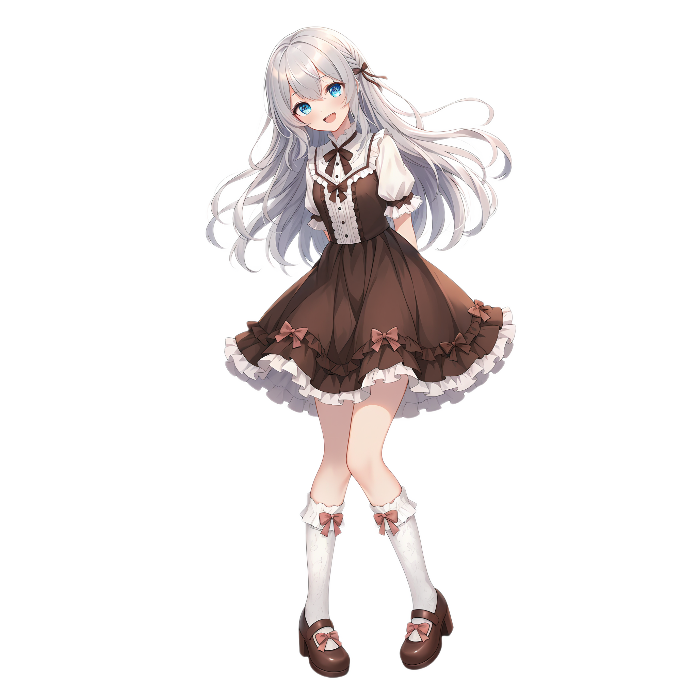
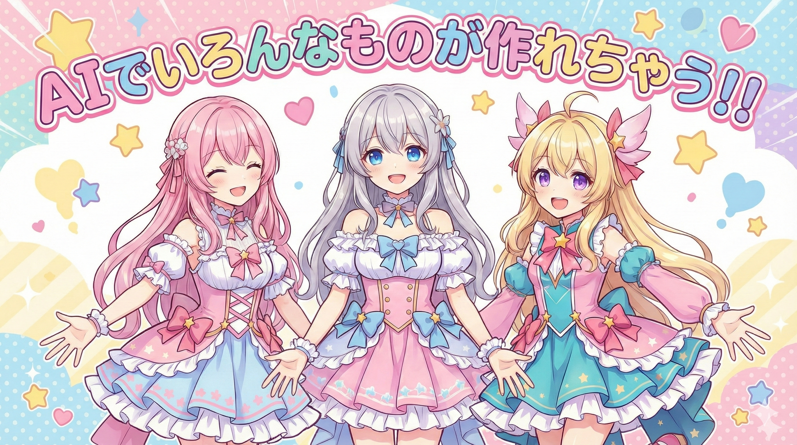
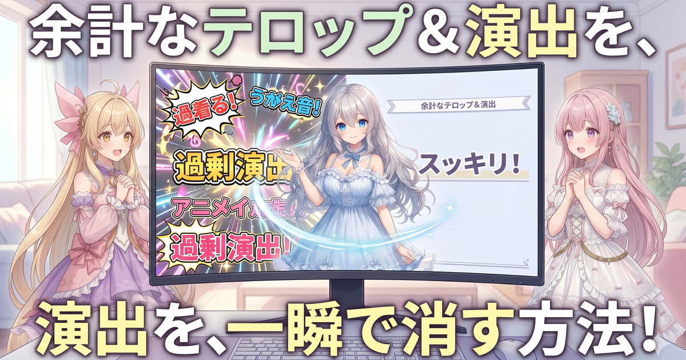

進行とツッコミ担当。落ち着いた優しいお姉さん。根は真面目な理系。

元気いっぱいの暴走ボケ担当。素朴な疑問でみんなを笑顔にするムードメーカー。

丁寧でやさしい解説役。むずかしい話もそっとかみ砕く、癒しの三女。

三姉妹のボケとツッコミを、台本から演出・音・映像まで自作パイプラインで制作。台本はClaude、絵はNanobanana系、声はirodori-tts。最後はルピナスが手で整えています。

配信やアニメに登場する三姉妹を、AIで一枚ずつ作り込み。表情差分もそろえて、物語を彩ります。

オリジナル楽曲づくりや、配信・制作を支える自作ツール（LUNA-AI / ARIA）の開発も。

AI Bloom Sisters（AIBS）の三姉妹が、AIを使ったショートアニメ動画づくりの裏側を、わいわい喋りながらお届けする日記です。「プログラミングは分からないけど、AIでものづくりしてみたい」人にも読めるように、むずかしい言葉はそのつどかみ砕いていきます。今日のテーマは 「演出の引き算」！
つづきを読む
動画づくりのパイプライン（台本→演出→音→映像の流し台）を一段ブラッシュアップ。とくに大きいのは、画面の見せ場（カメラの寄り・エフェクト・SFX）を 後段の小さなAIが付け足す方式 から 台本を書く“作者AI”が物語の流れと一緒に決めてしまう方式 に切り替えたこと。あわせて、ルール文・トークン計測・BGMノイズ対策などの足回りも整えました。
つづきを読む
AIショートアニメを作るパイプラインを端から端まで“健康診断”しました。新機能を足したというより、たまっていた小さなほころびを一気に直す日。同じようにAIで連続もの（シリーズ作品）を作っている人には、特に役立つ話だと思います。
つづきを読む次回の配信予定は準備中です。最新の配信告知はXをご覧ください。